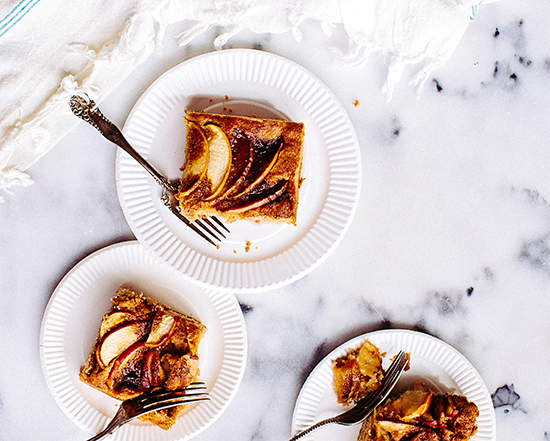

<section class="recipe">
    <div class="recipe__row">
        <div class="recipe__image">
            
        </div>
        <div class="recipe__content">
            <div class="recipe__content-title">
                <div class="recipe__content-info">
                    <ul>
                        <li>
                            
                            15
                        </li>
                        <li>
                            
                            Easy
                        </li>
                    </ul>
                    <button class="recipe__btn btn">Save Recipe</button>
                </div>
                <div class="recipe__content-text">
                    <p>
                        1 (8 ounce) container frozen whipped topping, thawed
                        20 chocolate round wafers, divided
                        1 (7 1/4 ounce) bottle Smucker's® Hot Dark Chocolate Microwaveable Topping, divided
                    </p>
                    <h3>Directions</h3>
                    <p>
                        ARRANGE 8 to 9 ice cream sandwiches in 9-inch square pan, cutting to form an even layer. Spread with half of whipped topping. Break or crush chocolate wafers and sprinkle over the whipped cream. Microwave 1 cup of chocolate topping into small microwave-safe bowl on HIGH for 30 seconds. Drizzle evenly over wafers.
                        TOP with remaining 8 to 9 ice cream sandwiches to form an even layer. Spread with remaining whipped topping. Freeze 3 hours or overnight.
                    </p>
                </div>
            </div>
        </div>
    </div>
</section>